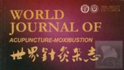

MEDICAL RESEARCH
HOME > MEDICAL RESEARCH
Pyonex is used in the following medical research.


Acupuncture combined with pyonex for xerophthalmia
Jun 2016
Hui GAO, Xiao-dong ZHAO, Guo-juan MA, Huan-li LI, Huai-dong LIU
Pyonex in treatment of 23 patients with delayed gastric emptying after esophagectomy
Mar 2016
GangFENG, Jin-shuangHUA
Acupuncture-induced changes of vagal function in patients with depression: A preliminary sham-controlled study with press needles
July 2015
Yoshihiro Noda, Takuji Izuno, Yoshie Tsuchiya, Shunsuke Hayasaka, Kiiko Matsumoto, Hirohiko Murakami, Arata Ito, Yukari Shinse, Aya Suzuki, Motoaki Nakamura
Needle embedding therapy for fifty cases of post-herpetic neuralgia
Publication Date: Apr 2015 Read more
Postoperative pain of mixed hemorrhoid treated by embedding needles in Erbai（二白 EX-UE2）
Publication Date: Apr 2015 Read more
Effect of press needles on swallowing reflex in older adults with cerebrovascular disease: a randomized double-blind controlled trial.
17 Dec 2014
Kikuchi A1, Seki T, Takayama S, Iwasaki K, Ishizuka S, Yaegashi N. 1Department of Traditional Asian Medicine, Graduate School of Medicine, Tohoku University, Miyagi, Japan.
Acupuncture for post anaesthetic recovery and postoperative pain: study protocol for a randomised controlled trial
21 July 2014
Johannes Fleckenstein123*, Petra I Baeumler1, Caroline Gurschler1, Tobias Weissenbacher4, Michael Simang5, Thorsten Annecke2, Thomas Geisenberger26 and Dominik Irnich12
Auricular acupuncture for primary care treatment of low back pain and posterior pelvic pain in pregnancy: study protocol for a multicentre randomised placebo-controlled trial
16 July 2014
Jorge Vas12*, José Manuel Aranda-Regules3, Manuela Modesto1, Inmaculada Aguilar1, Mercedes Barón-Crespo4, María Ramos-Monserrat5, Manuel Quevedo-Carrasco6 and Francisco Rivas-Ruiz27
Report on Disaster Medical Operations with Acupuncture/Massage Therapy After the Great East Japan Earthquake
Publication Date: 23 Apr 2012 PDF:Read more
Acupuncture for treatment of hospital-induced constipation in children: a retrospective case series study.
Acupunct Med. 2012 Aug 21.
Anders EF, Findeisen A, Nowak A, Rüdiger M, Usichenko TI.
Department of Paediatrics, Carl Gustav
Carus University, Hospital TU Dresden, Dresden, Germany.
Acupuncture for treatment of acute vomiting in children with gastroenteritis and pneumonia.
Klin Padiatr. 2012 Mar;224(2):72-5. Epub 2011 Aug 3.
Anders EF, Findeisen A, Lode HN, Usichenko TI.
Ernst-Moritz-Arndt-University, Pediatrics, Greifswald,
Germany.
Applicability of press needles to a double-blind trial: a randomized, double-blind, placebo-controlled trial.
Clin J Pain. 2009 Jun;25(5):438-44.
Miyazaki S, Hagihara A, Kanda R, Mukaino Y, Nobutomo K.
Department of Health Services, Management
and Policy, Graduate School of Medical Sciences, Kyushu University, Fukuoka, Japan.
A new proposal for Thumbtack needle treatments.
Shinkyu Osaka – Osaka Journal of Clinical Acupuncture &
Moxibustion 92 Vol. 24 No. 4 / 2008.
Winter
Eiji Furuya.
Oriental Medicine Clinical Laboratory, Kuretake College of Medical arts & Sciences,
Tokyo, Japan.